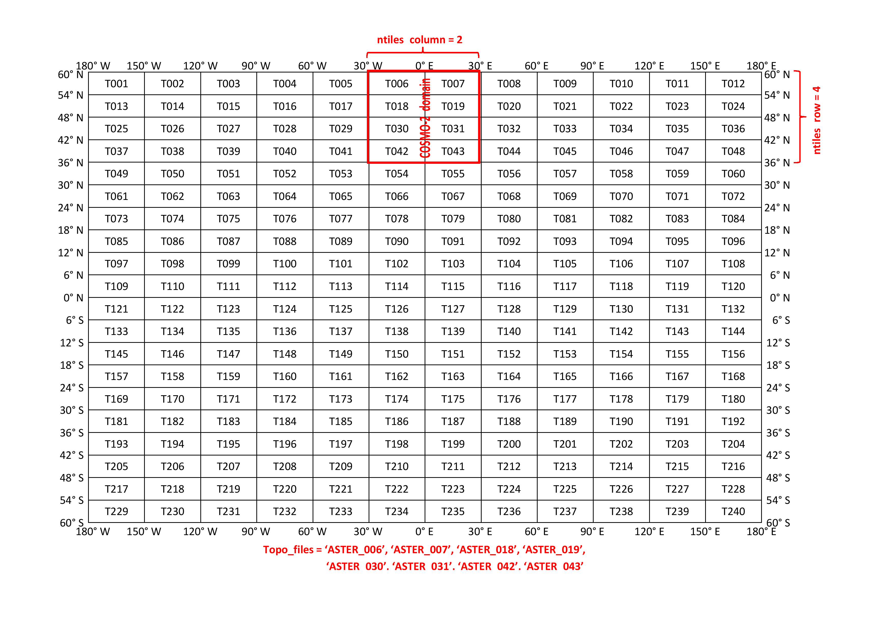
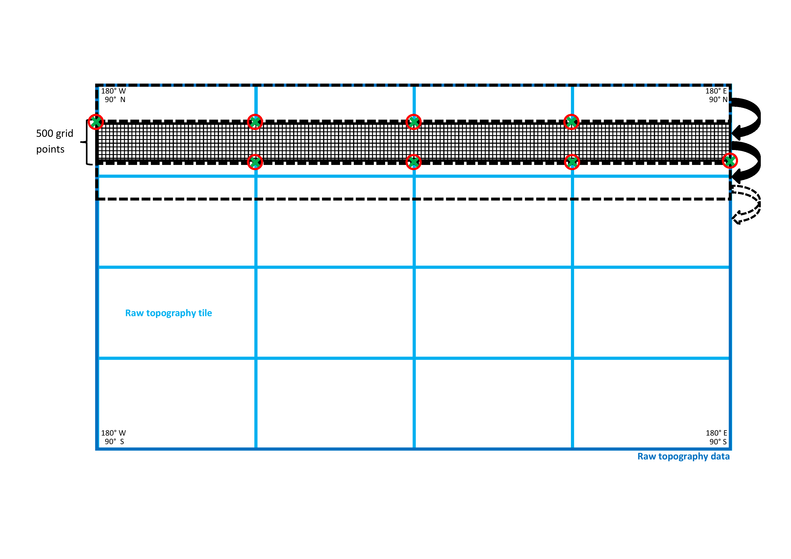
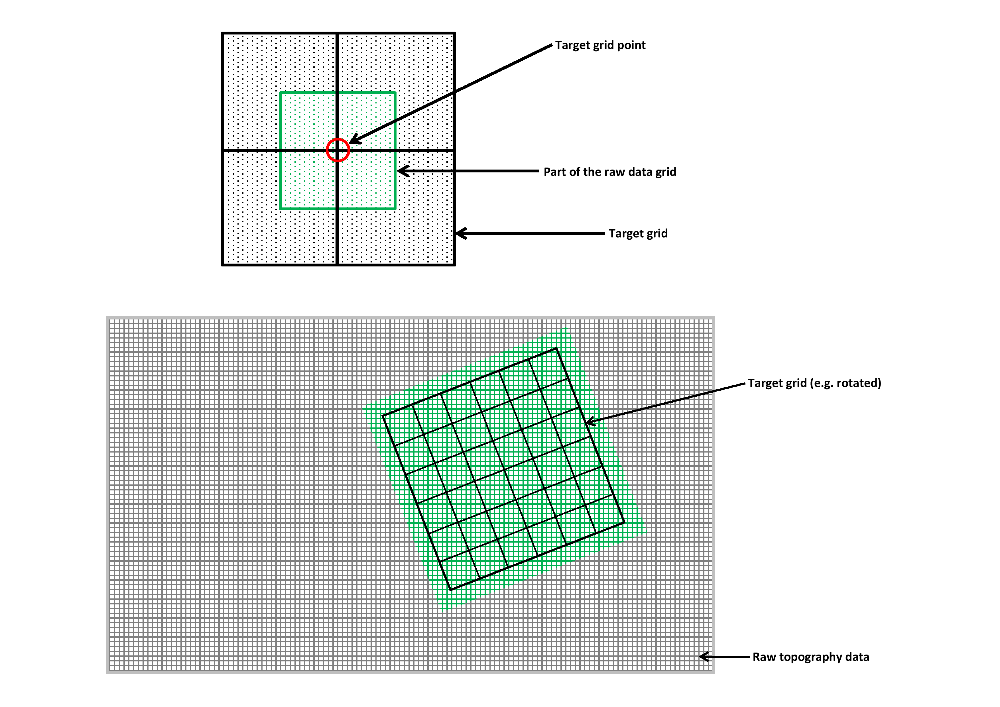

Fortran modules¶
extpar_topo_to_buffer¶
Short description of the subprogram extpar_topo_to_buffer¶
The program extpar_topo_to_buffer aggregates the orography of the GLOBE, ASTER, or MERIT/REMA dataset to the target grid.
Target grid definition¶
The first part of this program contains several routines that read the namelists defined in the run script (see chapter 6 for more information on the run scripts). The first routine (init_target_grid) collects all the information needed to define the target grid with an integrated routine that gathers the variables given in the namelist `INPUT_grid_org'. The variable igrid_type, which can either be 1 ('ICON') or 2 ('COSMO'), is an integer switch to define the target grid.
Then a routine reads the namelist of the corresponding grid, which is
either INPUT_ICON_GRID or `INPUT_COSMO_GRID', depending on the
chosen grid type. The run script contains only one of the two namelists.
This must be manually changed by the user. These namelists contain among
other variables the resolution of the grid, the user specified domain
and the location of the center of the grid (for closer information about
the namelists compare chapters
6.2.2 -
6.2.3).
This allows an exact definition of the target grid.
Subgrid-scale slope¶
The namelist INPUT_ORO contains the parameter lcompute_sgsl, to determine whether SGSL should be calculated from the respective raw topography data. Formerly this was done in a separate executable extpar_sgsl_to_buffer.exe. From Release 5.3 onwards, the SGSL calculation was incorporated into the execututable 'extpar_topo_to_buffer. As an intermediate step, the SGSL is written out to NetCDF, one separate file for each raw topography tile is required. In case the preprocessed SGSL NetCDF are already available, setting the parameter lpreproc oro= .false., deactivates the preprocessing, but not the aggregation of SGSL to the target grid. We recommend to only do the preprocessing for the GLOBE dataset, because the computational cost for the ASTER or MERIT/REMA dataset is very high and no validation has taken place for this dataset.
Topographic correction for radiation¶
In a second step, the namelist INPUT_RADTOPO is read. It contains the
information if the user desires the calculation of the topographical
corrected radiation parameters or not. If the switch is set to .TRUE. a
border is added to the COSMO domain, as the computations need grid
points beyond the edges of the normal domain. For ICON an on the fly
extension of the grid is not possible, leading to missing data at the
boundaries. Therefore the namelist-switch max_missing defines the
treshold for the allowed fraction of missingness. Altough the
topographical corrected radiation can be calculated for both ICON and
COSMO grids, the two sets of fields cannot be considered as identical,
because for ICON grids one assumes plain (non-tilted) grid-cells,
whereas for COSMO one also takes into account self-shading and effects
related to tilted-plains for the skyview-factor.
The number of horizons is specified in the namelist. For the COSMO-7 and COSMO-2 setup 24 horizons are recommended. The icon-only parameter radius defines the radial distance taken into account for the topographical corrected radiation parameters. To account for the anisotropic behaviour of longwave-radiation, the namelist parameter itype_scaling defines the power of the term SIN(horizon-angle) in the equation of the skyview-factor. Due to performance reasons, for ICON the parameter min_circ_cov determines how many grid-cells can be skipped on the circumference considered for the computations.
Raw topography data¶
The namelist INPUT_ORO gives the possibility to switch between two
raw orographical data sets (GLOBE, ASTER, or MERIT/REMA). In contrast to
the 90m-data of MERIT/REMA, it must be considered, that the 30m-data of
ASTER are not completely downloaded and are therefore not globally
available. The downloaded region extends from 60N to 60S and from 180W
to 180E. It is not recommended to derive the topographical parameters
from ASTER if the region is beyond 60 degrees north or south. The ASTER
files are arranged as displayed in
Fig. 2. As the computational time of the program
extpar_topo_to_buffer depends mainly on the number of ASTER files
that are read in, two new parameters are introduced in the namelist.
These two parameters give the number of columns and rows of the used
ASTER files. The filenames of the desired ASTER files must be given
manually. Figure 2 gives an example on how to use these
parameters in the case of COSMO-2. A similar approach is used for
MERIT/REMA DEM as shown in Figure 3.
The latitude range between 60-90 deg S
is covered by REMA DEM, which was mapped to the MERIT data format by
BKG, Germany. If GLOBE is used the columns and rows are set to 4 and all
GLOBE files must be listed in the topo_files parameter. A check in
the program extpar_topo_to_buffer is introduced, which gives a
warning if the borders of the domain are exceeded. This is followed by
an abortion of this program. As there is no need to calculate the
subgrid scale parameters (SSO) for high resolution setups, there is the
logical switch lsso_parm to turn off the calculation of the SSOs.


Furthermore the variables of the namelist `INPUT_ORO', which cover all the raw topographical data information, are fed into the program. In this namelist the path of the raw data is given as well as the names of the topography data files. An integer switch allows the choice between the highly resolved, non-global topography ASTER, the global but coarser MERIT/REMA and the coarser and global data set GLOBE (1: GLOBE, 2: ASTER, 3: MERIT/REMA). Furthermore the logical switch to decide whether the SSO parameters are desired or not is read. In order to define the right number of raw data tiles the variables ntiles_column and ntiles_row must be available in the namelist. Additionally, the names for the buffer and output files are defined.
The topography data files must be manually changed in the run script, when switching from GLOBE to ASTER, or MERIT/REMA and vice versa.
Then, the number of tiles of the raw topography data is defined (this varies between the raw data sets: 16 tiles for GLOBE, 1 - 240 tiles for ASTER, 72 tiles for MERIT/REMA). This value is the product of the number of tiles in each column and each row. The variables concerning the raw topography are allocated and in a further step filled with the according values. These values are the edges of each raw topography tile, the number of gridpoints in x- and y-direction, as well as the resolution in both directions. These are directly deduced from the raw data NetCDF files. Finally the borders of the ASTER domain are defined, when ASTER is used.
After the definition of the target grid and the topography set, a check examines the compatibility of the user specified input with the target grid; as ASTER is not globally available at the moment it is checked that the user specified domain is contained in the current ASTER domain. And, if this is not the case, the extpar_topo_to_buffer is aborted with an error message.
Scale separation input¶
The namelist INPUT_SCALE_SEP gives all the information needed to
calculate the SSO parameters and roughness length based on a 3 km
filtered topography. Thus the logical switch lscale_separation must be
read to decide if a scale separation is desired or not. Furthermore the
raw data files and path must be provided. Note that the
lscale_separation can only be set to .TRUE. if GLOBE is used as
topography, as there is no ASTER or MERIT/REMA based 3 km filtered
topography available yet. Additionally the user must decide if the
computation of the SSO parameters make sense or not. Table
3{reference-type="ref"
reference="tab:scale_separation"} can give some assistance to come to
the right decision.
| Resolution | Calculation of standard deviation | lscale_separation |
|---|---|---|
| Model resolution is \textbf{smaller} | SSOs: \(\sigma = 0\) | .FALSE. \tabularnewline |
| than raw data resolution | z0: \(\hspace{12pt}\sigma = 0\) | \tabularnewline\hline |
| Model resolution is \textbf{greater} | SSOs: \(\sigma = 0\) | .FALSE. \tabularnewline |
| than the raw data resolution | z0: \(\hspace{12pt}\sigma = \sum {(model - raw\hspace{2pt} data)}^{2}\) | and \tabularnewline |
| but \textbf{smaller} than 3 km | lsso_param = .FALSE.\tabularnewline\hline | |
| Model resolution is \textbf{greater} | SSOs: \(\sigma = \sum {(model - 3km\hspace{2pt} filt )}^{2}\) | .TRUE. \tabularnewline |
| than 3 km | z0: \(\hspace{12pt}\sigma = \sum {(3km\hspace{2pt} filt - raw\hspace{2pt} data)}^{2}\) | \tabularnewline |
Orographical smoothing input¶
The last namelist that must be read before allocating the orography is the namelist `INPUT_OROSMOOTH', which defines all the variables needed to perform an orographical smoothing. The lfilter_oro logical switch, controls the computation of the smoothing in EXTPAR.
Aggregation of the raw topography to the target grid¶
The subroutine det_topo_tiles_grid defines the grid of each raw topography data tile. For this, the start and end latitude and longitude of each tile, the distance between two grid points in the latitudinal and longitudinal direction (dlat, dlon) as well as the number of grid points in both directions (nlat, nlon) are derived for each tile. Additionally, the grid for the whole GLOBE, ASTER, or MERIT/REMA domain is derived; This is done in the subroutine det_topo_grid.
Before the raw topography can be aggregated on the target grid, the target variables must be allocated. These variables include the land fraction (FR_LAND), the elevation of the surface (hh_target), the standard deviation of the elevation (stdh_topo), the roughness length of the topography (z0_topo), the sub-grid scale orography parameters (theta_topo, aniso_topo and slope_topo) and the topographical corrected radiation parameters (slope_asp, slope_ang, horizon and skyview). For the ICON grid some additional parameters must also be allocated.
The following paragraphs describe computations on the raw data grid.
The subroutine agg_topo_data_to_target_grid does the actual work of aggregating the raw topography to the target grid. The whole topographical data set is divided in bands of 500 grid points in the latitudinal direction and the whole range of the raw data domain in the longitudinal direction (compare for this the black band in Fig. [fig:grid_figure]{reference-type="ref" reference="fig:grid_figure"}). This band is introduced to optimize memory usage, as it is not possible to read the whole raw data in one pass. In order to read the correct raw data the start and end index of each tile (green crosses in Fig. [fig:grid_figure]{reference-type="ref" reference="fig:grid_figure"}) is defined. These indices are additionally associated with a start and end index (red circles in Fig. [fig:grid_figure]{reference-type="ref" reference="fig:grid_figure"}) inside the band. The definition of the two kinds of indices is performed by the routine get_topo_tile_block_indices. With this band the whole raw data is read step by step as suggested in Fig. [fig:grid_figure]{reference-type="ref" reference="fig:grid_figure"}. If the scale separation is desired the same procedure is applied to the 3 km filtered topography.
 Schematic illustration of the filling of the raw data with a 500 grid points long band. The green crosses indicate the start end end latitudes and longitudes of each raw topography tile (light blue tiles), whereas the red circles show the indices inside the band, where the green indices of the tiles must be placed.
After this step, a temporary variable of elevation values is filled. This variable consists of three rows, which comprises the whole longitude range of the raw topography data. This is used to deduce the gradients of the topography, which are calculated as averaged differences between one eastern and one western grid point (x-gradient) or with one northern and one southern grid point (y-gradient). From these gradients in x- and y- direction also the squared gradients and the dx\(\ast\)dy are computed.
This is followed by a call of the subroutine find_rotated_lonlat_grid_element_index. This routine defines to which grid element of the target grid a certain grid element of the raw topography belongs. The allocation of the raw data points to the target grid element is performed as shown in Fig. [fig:aggregation_figure]{reference-type="ref" reference="fig:aggregation_figure"} a). All raw data elements that are closer than half a grid point (green box) to the target point (red circle) are used to define the value at the corresponding target grid point. Only the green grid elements in Fig. [fig:aggregation_figure]{reference-type="ref" reference="fig:aggregation_figure"} b) belong to a target grid element. The rest of the raw topography is unused.
 a) Illustration of the aggregation of the raw data to the target grid. The red circle indicates a target grid point, while the green rectangle represents the part of the raw data that is aggregated on the target grid point. b) Showing the target grid on top of the raw data set, where only the green grid points of the raw data are used for the target grid.
The elevations of raw data pixels that belong to one target grid element are summed up, and the number of raw data pixels contributing to one target grid element is tracked. A summation of the raw data values for each target grid element is also performed for the squared elevation, which is later used for the standard deviation, and for the gradients calculated before, which are required for the computation of the subgrid scale orography parameters. The latter is only calculated if the SSO parameters are desired. When making use of the scale separation the squared differences between the original and the 3 km filtered topography must be computed at every grid point. This is needed in order to calculate the roughness length specific standard deviation. After these calculations, the temporary rows are shifted to the north and the computation is repeated for the next center line. As soon as a band of 500 rows is finished a new one will be read in.
Now that all auxiliary variables are available, all loops over the raw topography data are closed and a new one over all the grid points of the target grid is opened.
The following paragraphs describe computations on the target grid.
First of all the elevation is calculated as the mean of all the raw topography data points that are enclosed in one target grid point.
As soon as the topography is available on the target grid, the orographical smoothing is applied using the subroutine do_orosmooth.
In a next step the variance and the standard deviation of the elevation at each target grid point is estimated. Subsequently, the SSO parameters angle of principle axis, anisotropy factor and slope parameter are calculated according to Lott and Miller (1996). These SSOs are only calculated if the SSO switch is set to .TRUE. and if the standard deviation of the height is more than 10 meters, as the trivial case of the ocean is tried to be avoided. If the scale separation is switched on the SSOs are based on the 3 km filtered topography. Finally the orographical roughness length is calculated using the standard deviation, but only if at least one raw data pixel is present in the target grid element.
In the case where no raw topography data pixel is available in a target grid, a weighted bilinear interpolation between neighboring raw data grid element is performed to obtain an elevation in all target grid points. This mainly happens if the raw topography has a similar resolution as the target grid. If the bilinear interpolation needs to be applied, all the SSO as well as z0 are set to zero for this grid element. With this step the end of the subroutine agg_topo_data_to_target_grid is reached.
In the program extpar_topo_to_buffer an additional check on SSOs and z0 is performed. If none of the elements of the target grid is associated with at least ten raw data pixels, or as soon as one single element is not associated with any raw data pixel, all the SSOs and z0 are set to zero.
As soon as there is a value for all the target grid elements, the calculation for the topographical corrected radiation parameters can start, if desired at all.
Finally NetCDF files for the orography based external parameters are created, where different NetCDF routines are used for each grid type, as different parameters are needed for each of them. If the lradtopo is set to .TRUE. the enlarged domain is cut back to the user specified domain, before writing it to the NetCDF file.
Used namelist files and data in-/output:¶
-
namelist files: INPUT_grid_org, INPUT_COSMO_GRID, INPUT_ICON_GRID,\ INPUT_ORO, INPUT_OROSMOOTH, INPUT_RADTOPO
-
data input (GLOBE): GLOBE_A10.nc - GLOBE_P10.nc
-
data input (ASTER): ASTER_T001.nc - ASTER_T240.nc
-
data input (MERIT/REMA): MERIT_N90-N60_E150-E180.nc4 - REMA_BKG_S60-S90_W180-W150.nc4
-
data input (filtered): GLOBE_A_filt_lanczos_window.nc - GLOBE_P_filt_lanczos_window.nc,\ GLOBE_A_filt_tukey_0.75_3.0_it4.nc - GLOBE_P_filt_tukey_0.75_3.0_it4.nc
-
Output: buffer file with orography data (/orography_io_extpar/ orography_buffer_file)\ output file with orography data (used in extpar_cru_to_buffer)\ (/orography_io_extpar/ orography_output_file)
extpar_landuse_to_buffer¶
Short description of the subprogram extpar_landuse_to_buffer¶
The executable extpar_landuse_to_buffer aggregates the land use data to the target grid. Five different raw datasets can be processed: Globcover, GLC2000, GLCC, ESA CCI-LC and Ecoclimap Second Generation (Ecoclimap-SG from here onwards). As GLC2000 and Globcover do not include Antarctica, GLCC or ESA CCI-LC data can be used for the missing areas. The landuse executable also includes the TERRA-URB module, controlled by the logical switch l_terra_urb; see section 3.2.2 for details.
Target grid definition¶
The definition of the target grid is done by reading the namelist
'INPUT_grid_org'. This namelist contains the information about the
grid type, which can either be ICON or COSMO. With the information about
the grid type, the namelist containing the grid definition can be read.
The name of the namelist must be changed manually by the user, according
to the chosen grid type. The namelist must either be INPUT_ICON or
'INPUT_COSMO'. For a more exact description of the target grid
definition, read the subsection 'Target grid definition' in section
3.1{reference-type="ref"
reference="extpar_topo_to_buffer"}. After specifying the grid definition
the southern band of the target grid is defined. This information is
important, as the two raw data sets GLC2000 and Globcover do not cover
the region below 60 degrees south. If this region is desired by the
user, the third data set must be considered for the domain below the
southern band. Additionally the target fields for the land use data are
allocated.
Raw landuse data¶
In a next step the namelist INPUT_LU is read. It contains an integer
switch (i_landuse_data) that gives the possibility to choose between
the five different raw data sets e.g., 1 (Globcover), 2 (GLC2000), 3
(GLCC), 5 (ESA CCI-LC), and 6 (Ecoclimap-SG). For Globcover one can
additionally choose to use the corine landuse dataset by setting the
logical switch (l_use_corine) to TRUE. Furthermore the path and the
filename of the desired raw data and of GLCC are specified there. The
user must adjust the filename and path manually according to the chosen
raw data in i_landuse_data. In addition the name of the desired
lookup table is read, which again can be chosen by the user using an
integer switch ilookup_table_lu. The lookup tables are described in
more detail in table 5{reference-type="ref"
reference="tab:look_up_table"}. The names of the buffer files for the
target landuse fields and for the target GLCC fields are also specified
in this namelist. Finally, the aforementioned l_terra_urb logical
switch can be specified (the default value is .FALSE.).
After having read the namelists, the number of tiles of the raw data set is defined. The number of tiles is set to 1 as default and must only be changed for the raw data set Globcover or ESA CCI-LC, which are composed of 6 tiles. The basic information of the Globcover tiles, such as the latitude and longitude edges and the resolution is allocated according to the number of tiles. Later these variables are filled with the respective information, read from the NetCDF files directly.
For the remaining procedures the three different raw land use data have their separate routines, which are constructed identically.
The allocation of the data is done using the number of grid points in the latitudinal and longitudinal direction. Furthermore the land-use target fields are allocated using the target grid for the dimension size and the number of land-use classes. The land-use classes differ for the three raw data sets and are described in more detail in table 4{reference-type="ref" reference="tab:land_use_classes"}.
::: {#tab:land_use_classes}
Data Set Number of Class Name of Class
(Total number of Classes)
GLOBCOVER (23)
01 irrigated croplands
02 rainfed croplands
03 mosaic cropland (50-70%) - vegetation (20-50%)
04 mosaic vegetation (50-70%) - cropland (20-50%)
05 closed broadleaved evergreen forest
06 closed broadleaved deciduous forest
07 open broadleaved deciduous forest
08 closed needleleaved evergreen forest
09 open needleleaved decid. or evergr. forest
10 mixed broadleaved and needleleaved forest
11 mosaic shrubland (50-70%) - grassland (20-50%)
12 mosaic grassland (50-70%) - shrubland (20-50%)
13 closed to open shrubland
14 closed to open herbaceous vegetation
15 sparse vegetation
16 closed to open forest regulary flooded
17 closed forest or shrubland permanently flooded
18 closed to open grassland regularly flooded
19 artificial surfaces
20 bare areas
21 water bodies
22 permanent snow and ice
23 undefined
Corine (23)
Corine (23)
(CLC: 2.1.2, 2.1.3) 11 irrigated croplands
(CLC: 2.1.1) 14 rainfed croplands
(CLC: 2.4.2, 2.4.3) 20 `mosaic cropland (50-70%) - vegetation (20-50%)
(CLC: 2.4.4) 30 mosaic vegetation (50-70%) - cropland (20-50%)
40 closed broadleaved evergreen forest
(CLC: 3.1.1) 50 closed broadleaved deciduous forest
60 open broadleaved deciduous forest
(CLC: 3.1.2) 70 closed needleleaved evergreen forest
(CLC: 1.4.1) 90 open needleleaved decid. or evergr. forest
(CLC: 3.1.3) 100 mixed broadleaved and needleleaved forest
(CLC: 2.2.3, 3.2.4) 110 mosaic shrubland (50-70%) - grassland (20-50%)
(CLC: 2.2.2, 3.2.2) 120 mosaic grassland (50-70%) - shrubland (20-50%)
(CLC: 2.2.1) 130 closed to open shrubland
(CLC: 2.3.1, 3.2.3) 140 closed to open herbaceous vegetation
(CLC: 3.2.1) 150 sparse vegetation
160 closed to open forest regulary flooded
(CLC: 4.1.2) 170 closed forest or shrubland permanently flooded
(CLC: 4.1.1) 180 closed to open grassland regularly flooded
(CLC: 1.1.1, 1.1.2, 1.2.1, 1.2.2, 1.2.3, 1.2.4, 1.3.3, 1.4.2) 190 artificial surfaces
(CLC: 3.3.1, 3.3.2, 3.3.3, 3.3.4, 1.3.1, 1.3.2) 200 bare areas
(CLC: 4.2.1, 4.2.2, 4.2.3, 5.1.1, 5.1.2, 5.2.1, 5.2.2, 5.2.3) 210 water bodies
(CLC: 3.3.5) 220 permanent snow and ice
(CLC: 9.9.9) 230 undefined
GLC2000 (23)
01 evergreen broadleaf tree
02 deciduous broadleaf tree closed
03 deciduous broadleaf tree open
04 evergreen needleleaf tree
05 deciduous needleleaf tree
06 mixed leaf tree
07 fresh water flooded tree
08 saline water flooded tree
09 mosaic tree / other natural vegetation
10 burnt tree cover
11 evergreen shrubs closed-open
12 deciduous shrubs closed-open
13 herbaceous cover closed-open
14 sparse herbaceous or grass
15 flooded shrub or herbaceous
16 cultivated and managed areas
17 mosaic crop/tree/natural vegetation
18 mosaic crop/shrub or grass
19 bare areas
20 water bodies
21 snow and ice
22 artificial surfaces
23 undefined
GLCC (24)
01 urban and built-up land
02 dryland cropland and pasture
03 irrigated cropland and pasture
04 mixed dryland/irrigated
05 cropland/grassland mosaic
06 cropland/woodland mosaic
07 grassland
08 shrubland
09 mixed shrubland/grassland
10 savanna
11 decidous broadleaf forest
12 decidous needleleaf forest
13 evergreen broadleaf forest
14 evergreen needleleaf forest
15 mixed forest
16 water bodies
17 herbaceous wetland
18 wooded wetland
19 barren or sparsely vegetated
20 herbaceous tundra
21 wooded tundra
22 mixed tundra
23 bare ground tundra
24 snow or ice
Ecoclimap-SG (33)
01 sea and oceans
02 lakes
03 rivers
04 bare land
05 bare rock
06 permanent snow
07 boreal broadleaf deciduous
08 temperate broadleaf deciduous
09 tropical broadleaf deciduous
10 temperate broadleaf evergreen
11 tropical broadleaf evergreen
12 boreal needleleaf evergreen
13 temperate needleleaf evergreen
14 boreal needleleaf deciduous
15 shrubs
16 boreal grassland
17 temperate grassland
18 tropical grassland
19 winter C3 crops (lower T & greater water avail.)
20 summer C3 crops
21 C4 crops (warmer environments)
22 flooded trees
23 flooded grassland
24 LCZ1: compact high-rise
25 LCZ2: compact midrise
26 LCZ3: compact low-rise
27 LCZ4: open high-rise
28 LCZ5: open midrise
29 LCZ6: open low-rise
30 LCZ7: lightweight low-rise
31 LCZ8: large low-rise
32 LCZ9: sparsely built
33 LCZ10: heavy industry
- Land-use classes for the different raw data sets. The Corine LandCover (CLC) classes in the left column indicate how the CLC is mapped to the corresponding GlobCover class. :::
After the allocation of the data a check is performed to query, if the user desires a domain that goes beyond the southern bound of the raw data. If it is the case, the GLCC target fields are allocated as well.
In case that Globcover is used, the grid for the single tiles must be defined as well.
Aggregation of the raw land-use data to the target field¶
The definition and allocation part is done and the most important part, the aggregation of the raw data to the target grid can be performed. In order to be able to aggregate the data, the lookup table must first be initialized. The initial values differ for the various settings listed in table 5{reference-type="ref" reference="tab:look_up_table"}. Also the name of the lookup table must be defined using the integer numbers specified in the namelist 'INPUT_LU'. The integer number are listed together with their associated lookup table names in table 5{reference-type="ref" reference="tab:look_up_table"}.
::: {#tab:look_up_table} Raw Data Integer Setting Name of the lookup table
- GLOBCOVER 1 operational settings Asensio, 2011
- 2 experimental settings, analog to lookup tables of ECOCLIMAP Asensio, 2010
- GLC2000 1 operational settings of GME Ritter, 2007
- 2 operational settings of COSMO Heise, 2005
- 3 experimental settings, analog to lookup tables of ECOCLIMAP Asensio, 2010
- GLCC 1 operational settings of GME Ritter, 2007
- 2 operational settings of COSMO Heise, 2005
- 3 experimental settings, analog to lookup tables of ECOCLIMAP Asensio, 2010
- ESA CCI-LC 1 experimental settings Helmert, 2019
- Ecoclimap-SG 1 Globcover analogue with added LCZs from Oke
-
Names of the lookup tables and the different possible settings for each raw land-use data set. :::
The following paragraphs describe computations on the raw data grid.
For GLC2000 and GLCC, the raw data is read in lines of a complete longitude going from 180 degrees east to 180 degrees west, through a loop over the latitude. Before any calculation is performed, it is tested if the value of the latitude is contained inside the targed domain. In case it is not, the loop is cycled. Reading of the data line-wise can be done from the NetCDF file directly.
Using the routine find_nearest_target_grid_element each raw data pixel is assigned to a target grid point. A more precise description and a figure that describes the procedure can be found in paragraph 'Aggregation of the raw topography to the target grid' and in Fig. [fig:aggregation_figure]{reference-type="ref" reference="fig:aggregation_figure"} in section 3.1{reference-type="ref" reference="extpar_topo_to_buffer"}.
As Globcover and ESA CCI-LC are composed of six tiles, the reading of the raw data must be performed in a different way than for the other three data sets. The reading of the data for Globcover is done in the same way as for the topography. Compare the paragraph 'Aggregation of the raw topography to the target grid' in section 3.1{reference-type="ref" reference="extpar_topo_to_buffer"}. (As there is no need to calculate gradients for the land use, the corresponding variable, which contains three lines of raw data, is not used.
The lookup table is then fed with the land use class, which gives a value for all the target fields listed in table 6{reference-type="ref" reference="tab:target_fields_lu"}.
::: {#tab:target_fields_lu} Variable long name Variable short name Remark
- Fraction Land FR_LAND
- Ice fraction FR_ICE
- Plant cover maximum PLCOV_MX
- Plant cover minimum PLCOV_MN
- Leaf area index maximum LAI_MX
- Leaf area index minimum LAI_MN
- Minimal stomata resistance RS_MIN
- Urban area fraction URBAN
- Fraction of deciduous forest FOR_D
- Fraction of evergreen forest FOR_E
- Longwave surface emissivity EMISS_RAD
- Root depth ROOTDP
- Roughness length Z0
-
The variables that are computed using the raw land-use data.
:::
The number of grid points that fall into the same target grid and land use class are summed up. The values of the target fields are weighted with the whole pixel area and summed up. Except for the emissivity, which is the only land-use parameter that also has valid values over water, only land pixels are considered. Values that depend on the plant cover, such as PLCOV_MX, PLCOV_MN, LAI_MN, LAI_MX, RS_MIN, FOR_E, FOR_D, ROOTDP and z0, are weighted with the plant cover maximum in addition to the pixel area.
The following paragraphs describe computations on the target grid.
The total area and the land area of each target grid point is first defined. Then the weighted sums of the target fields derived in the previous step are normalized to obtain the definite values. The emissivity and the number of land use classes are normalized by the total area to obtain the correct emissivity and area fraction of each land use class. The other parameters are only considered if the area_land is larger than zero: FR_LAND and FR_ICE are normalized with the total area, URBAN, FOR_D, FOR_E, PLCOV_MN and PLCOV_MX are normalized by the land area, the ROOTDP, LAI_MN, LAI_MX and RS_MIN are normalized by the area covered by plants. If only sea pixels are found, all the fields are undefined.
Finally land-use classes are defined for target grid points that do not contain any raw data pixel. In contrary to the topography, where a bilinear interpolation is performed, here the nearest neighbor is searched. The associated land use class is used with the lookup tables, and the target fields are defined.
The target fields are written to a NetCDF buffer file, which can later be used for the consistency check. There is a file for the chosen land use data set, and one, if needed at all, for the GLCC land use data. Finally the allocated memory is deallocated again.
TERRA-URB¶
NOTE: currently the TERRA-URB module in extpar only works with the Ecoclimap-SG database, as this is the only database available for extpar with an LCZ map.
The executable extpar_landuse_to_buffer also includes the TERRA-URB module, controlled by the logical switch l_terra_urb. This module uses a 2D map of local climate zones (LCZ) to determine a set of urban canopy variables used by TERRA-URB in COSMO/ICON, see table 7. The module aggregates the variables and outputs them to the lu_buffer_file. The aggregation procedure follows that of the other land use variables described in the previous sections. The TERRA-URB related variables then pass through the subprogram extpar_consistency_check (see section 3.7{reference-type="ref" reference="extpar_consistency_check"}) and are written out to the final extpar file for both COSMO and ICON. ICON would typically ignore these fiels and just use the information from the LU_CLASS_FRACION field, as is done for other land use variables, except for when ntiles=1 in which case it needs the 2D fields. The ISA and AHF extpar modules must be turned off when running with l_terra_urb=.true, as these fields are computed within the TERRA-URB module. The code for this module is based upon Matthias Demuzere's WUDAPT-to-COSMO [@Varentsov2020] and Handrik Wouters' SURY [@Wouters2016] codes. The LCZ look-up tables are based on the values published in [@Stewart2012; @Stewart2014].
::: {#tab:terra_urb} Variable name Description
- FR_URBAN Urban area fraction
- ISA Imprevious surface area
- AHF Anthropogenic heat flux
- FR_PAVED Fraction of impervious surface area
- URB_FR_BLD Urban building fraction
- URB_H_BLD Urban building height
- URB_H2W Urban canyon height to width ratio
- URB_ALB_SO Urban shortwave (solar) albedo
- URB_ALB_TH Urban thermal albedo
- URB_EMIS Urban emissivity
- URB_HCON Urban mean heat conductivity
- URB_HCAP Urban mean heat capacity
-
Varialbes provided by the TERRA-URB module
:::
Used namelist files and data in-/output:¶
-
namelists files: INPUT_grid_org, INPUT_COSMO_GRID, INPUT_ICON_GRID, INPUT_LU
-
data input: GLC2000_byte.nc, GLCC_usgs_class_byte.nc,\ CORINE_globcover.nc,\ GLOBCOVER_0_16bit.nc - GLOBCOVER_5_16bit.nc,\ ECCI_300m_0.nc - ECCI_300m_5.nc,\ ECOCLIMAP_SG.nc
-
Output: buffer file with landuse data (/lu_io_extpar/ lu_buffer_file) and buffer file with GLCC data (/glcc_io_extpar/ glcc_buffer_file)
extpar_aot_to_buffer¶
Short description of the subprogram extpar_aot_to_buffer¶
The executable extpar_aot_to_buffer aggregates aerosol optical thickness data to the target grid.
Target grid definition¶
The definition of the target grid is again done using the namelist 'INPUT_grid_org'. As the subroutines are exactly the same as the ones used in extpar_topo_to_buffer, it is referred to the subsection 'Target grid definition' in section 3.1{reference-type="ref" reference="extpar_topo_to_buffer"}, where the procedure is explained in more detail.
Raw aerosol optical depth data¶
The namelist INPUT_AOT is kept very simple. It contains only the path
and the name of the raw aerosol optical depth data. The integer switch
(iaot_type) informs extpar which of the 4 available datasets has been
chosen: 1 (Tegen), 2 (AeroCom), 3 (MACC-II), 4 (MACv2) or 5 (CAMS) .
Additionally, also the filenames of the buffer and output files for the
aggregated data is specified.
In order to allocate the variables used to read the raw data, the dimensions of the raw data is defined. These dimensions include the number of rows and columns of the NetCDF raw data file, the number of months, which is equal to 12, as a full yearly cycle is described, and the number of types of aerosols contained in the raw data file. This number is 5 for iaot_type=1,2 or 3 , as the raw data file contains the aerosol optical thickness information of black carbon, dust, organic matter, sulfate and sea salt. iaot_type=4 is used for a new formulation of the radiation-aerosol interaction available only in version of COSMO later than 5.04. This provides data of the aerosol optical thickness, the single scattering albedo and the asymmetry factor for the 8 spectral bands defined in the RG92 radiation scheme. iaot_type=5 is used only for ICON model. The raw data file contains the layer-integrated mass information of 11 types of aerosols: Sea Salt (3 bin), Mineral Dust (3 bin), hydrophilic and hydrophobic organic matter, hydrophilic and hydrophobic black carbon and sulfate. Also the raw data file contains the pressure for 60 vertical levels. The 3 first data-sets which provide raw data for different aerosol types refer to Tegen[^1], AeroCom[^2] and MACC-II[^3] whereas the fourth data-set is derived from MACv2[^4] and the fifth data-set is derived from CAMS[^5].
In a next step, the complete raw data is read into memory; this is possible since the aerosol optical depth raw data is of rather coarse resolution (see table 8{reference-type="ref" reference="tab:aerosol"}). Also, the grid of the raw data is determined from NetCDF meta data. Before the aggregation to the target grid can start, the target grid fields must be allocated, using the target grid, the number of months and aerosol types or spectral bands.
::: {#tab:aerosol} Raw data set resolution
- Tegen 4 x 5 degree
- AeroCom 1 x 1 degree
- MACC-II 1.125 x 1.125 degree
- MACv2 1 x 1 degree
- CAMS 3 x 3 degree x 60 levels
-
resolution of raw data-sets for aerosol optical depths.
:::
Aggregation of the aerosol optical depth to the target field¶
As the resolution of all raw data sets is so coarse, there is no need to go through the whole raw data set and find the corresponding target grid element. Here there is only one loop over the target grid. For every target grid element four surrounding raw data points are searched for. With these four points, a weight for the bilinear interpolation is computed. As the raw data grids of the 5 different aerosols are equal, the four surrounding points are the same for all months and aerosol types. Four new arrays (SW, SE, NE, NW) are then defined, which contain the four neighbor values, for each month and each type. These can now be used, together with the previously calculated weights, to calculate the bilinear interpolation.
Finally the data is saved in a NetCDF buffer and an output file, and the allocated variables are deallocated.
Used namelist files and data in-/output:¶
-
namelists files: INPUT_grid_org, INPUT_COSMO_GRID, INPUT_ICON_GRID, INPUT_AOT
-
data input: aot_GACP.nc, aod_AeroCom1.nc, aod_MACC_2003-2012.nc,\ aod_MACC_2003-2012_proc.nc, aot_MACv2.nc, aot_CAMS_2003-2013.nc
-
Output: buffer file with aerosol data (/aerosol_io_extpar/ aot_buffer_file)
extpar_soil_to_buffer¶
Short description of the subprogram extpar_soil_to_buffer¶
The executable extpar_soil_to_buffer aggregates soil data of the FAO Digital Soil Map of the World or of the Harmonized World Soil Data (HWSD) to the target grid.
Target grid definition¶
The definition of the target grid is again done using the namelist 'INPUT_grid_org'. As the subroutines are exactly the same as the ones used in extpar_topo_to_buffer, it is referred to the subsection 'Target grid definition' in section 3.1{reference-type="ref" reference="extpar_topo_to_buffer"}, where the procedure is explained in more detail.
Raw soil data¶
The variables for the raw soil data are read from the namelist 'INPUT_SOIL'. These variables are the path and the names of the raw data files and two switches to decide whether the FAO or the HWSD data should be used and if the deep soil data is desired or not. The integer switch isoil_data determines the raw data and processing used: 1 for FAO, 2 for the HWSD data-set[^6] and 3 for the use of HWSD data with mapping to TERRA soil types. The switch to choose the production of deep soil information is a logical (only applicable to isoil_data=2). Additionally, the names of the buffer files are specified. Be aware that a change of the integer switch from FAO to HWSD requires also the manual replacement of the raw data file names in the namelist.
After reading the namelist, a check is made on the production of subsoil characteristics. This is only supported for HWSD data, and a warning is issued in case of bad usage.
The dimensions of the raw soil data are defined, which include the number of grid points in the latitudinal and longitudinal direction, as well as the number of soil data code of the raw data. These values are needed to allocate the soil data with the proper size.
The mapping between raw data sets specific codes and some standard soil
types is defined; this concerns the soil types undefined',default',
'iceandwater'.
As the soil data is provided in one single file, all data can be read in one shot. The data that are read from the NetCDF file are the texture and the slope of the soil data and the soil code. The aggregation of the data is done in a different way for the FAO and HWSD data, as these result in two completely different variables. Moreover, for HWSD data, to conserve memory, the topsoil data are allocated first and aggregated to the target grid, before the same is done for the subsoil.
Aggregation of the FAO and HWSD data with TERRA mapping to the target grid¶
The following paragraphs describe computations on the raw data grid.
The soil data is read using a loop over the latitude and the longitude. This results in a point-wise reading of the raw data. As soon as the point is read, its corresponding target grid element is defined. If the regular latitude/longitude grid point is not contained in the target grid, a new point is read. If however the point is inside the target grid, the aggregation can begin.
The number of raw data pixels is increased by one, if a raw data point can be assigned to a target grid point. This number is later used to define the fraction land defined by the soil data. The corresponding soil unit is deduced from the raw data. If the soil unit is zero, this is an ocean pixel and the number of sea points is increased by one. If the soil code differs from zero, the number of land points is increased by one. The soil code is then associated to either a special or a normal soiltype. For all the special soiltypes such as ice, rock, salt, histosols, dunes and no data flags the respective texture (coarse, medium, fine) are defined using a lookup table. All other soil units are described using the texture available in the raw data. These values define the final texture variable `texture'.
The following paragraphs describe computations on the target grid.
In the following a loop is opened over the target grid points. First of all the fraction land is defined using the number of land pixels minus the number of inland water pixels, which is then averaged by the number of raw data pixels that were available for the target grid element. In a next step the texture for every target grid element is defined. For the special soiltypes (texture larger than 900) the corresponding number is associated. For the normal soiltypes (texture smaller than 900) the texture is calculated as average of the summed up texture. The resulting texture value is multiplied by 100 and converted into an integer number. This number is used to associate the final soiltype to every target grid element. The soiltypes are described in more detail in table 9{reference-type="ref" reference="tab:soil_types_FAO"}. For target grid points that do not contain any raw data points, the nearest neighbor in the raw data is defined. If the target grid point is outside the raw data grid the slope is defined as zero and the texture as undefined.
::: {#tab:soil_types_FAO} TERRA Code Soiltype raw data code
- 1 ice and glacier[^7] 9001
- 2 rock, lithosols 9002
- 3 sand 9003 (salt), 9005 (shifting sands and dunes) and coarse texture
- 4 sandy loam coarse to medium texture
- 5 loam (default soiltype) 9009 (undefined), 9012 (dominant part undefined), medium texture
- 6 loamy clay medium to fine texture
- 7 clay fine texture
- 8 histosols (peat) 9004
- 9 water 9000 (undefined: inland water), -9 (undefined: ocean)
-
TERRA soiltypes and their respective FAO raw data codes.
:::
Aggregation of the HWSD data to the target grid¶
The aggregation starts again with a loop over the latitudes and longitudes. For each grid point a target grid element is looked for. If there is a target grid element, the aggregation can start. The soiltype is defined using the raw data value, if it is above zero, and zero otherwise. Additionally, all the ocean, land and lake points are counted in order to determine the land fraction which is calculated as the difference between the summed up land and lake points normalized by the number of raw data pixels available. For target grid points with no raw data, the nearest neighbor in the raw data is defined.
The resulting soiltype is not yet usable, as it contains numbers coded in a world code and not in TERRA soiltypes. This transformation is done in the consistency check, where the special soiltypes of the HWSD data, specified in table 10{reference-type="ref" reference="tab:soil_types_HWSD"}, are packed in the variable `SOILTYP' the normal soiltypes are given in fractions of sand, silt, clay and organic carbon, and the bulk density is also given.
::: {#tab:soil_types_HWSD} TERRA Code Soiltype TERRA Code Soiltype
- 1 ice and glacier 8 histosols (peat)
- 2 rock, lithosols 9 water
- 3 sand 10 alkali flat
- 4 sandy loam 11 shifting sand, dunes
- 5 loam (default soiltype) 12 Urban, human disturbed
- 6 loamy clay 225 Unknown
- 7 clay
-
New TERRA soiltypes deduced from the HWSD data.
:::
Output of the soil data¶
The soiltypes and the fraction land, together with the undefined value, the latitudes and longitudes are saved in a NetCDF buffer file. This is later used to perform the consistency check, which is especially important for the HWSD data, as the main transformation of the data takes place there.
Used namelist files and data in-/output:¶
-
namelists files: INPUT_grid_org, INPUT_COSMO_GRID, INPUT_ICON_GRID, INPUT_SOIL
-
data input: FAO_DSMW_double.nc, FAO_DSMW_float.nc,\ HWSD0_30_topsoil.nc, HWSD30_100_subsoil.nc
-
Lookup tables for HWSD: LU_TAB_HWSD_UF.data, HWSD_DATA_COSMO.data,\ HWSD_DATA_COSMO_S.data
-
Output: buffer file with soil data (/soil_io_extpar/ soil_buffer_file)
extpar_flake_to_buffer¶
Short description of the subprogram extpar_flake_to_buffer¶
The executable extpar_flake_to_buffer aggregates lake depth data and lake fraction to the target grid.
Target grid definition¶
The definition of the target grid is again done using the namelist 'INPUT_grid_org'. As the subroutines are exactly the same as the ones used in extpar_topo_to_buffer, it is referred to the subsection 'Target grid definition' in section 3.1{reference-type="ref" reference="extpar_topo_to_buffer"}, where the procedure is explained in more detail.
Raw lake data¶
As only the target grid dimensions are needed to allocate the target
fields, this is done right after the definition of the target grid. Then
the namelist INPUT_FLAKE is read to define the path and the filename
of the raw lake data. Also the names of the buffer and the output file
for the consistency check are given. Once more the dimensions of the raw
data are needed to allocate the raw data correctly; these dimensions are
deduced from the netcdf file directly and the raw data grid is defined.
Aggregation of the lake data to the target grid¶
The following paragraphs describe computations on the raw data grid.
The data is read row-wise, through a loop over the latitudes, shipping all latitudes not inside the user specified domain. If a row is kept, a new loop over the longitudes is started to treat the raw data point-wise. For each point, the corresponding target field element is defined. This is done in the same way described in the subsection 'Aggregation of the topography to the target grid' in section 3.1{reference-type="ref" reference="extpar_topo_to_buffer"} and Fig. [fig:aggregation_figure]{reference-type="ref" reference="fig:aggregation_figure"}. The number of raw data pixels that contribute to the target grid value are summed up as well as the lake depth, which is multiplied by a scale factor deduced from the area of each pixel that contributes to a lake fraction.
The following paragraphs describe computations on the raw data grid.
The lake fraction is derived and the lake depth is obtained by normalizing the weighted sum previously computed. Where no lake depth is available the value is set to undefined (-1). In case that no raw data pixel is available the nearest neighbor in the raw data is searched for.
The target fields are then written to a netcdf buffer and output file. Finally the allocated memory can be released.
Used namelist files and data in-/output:¶
-
namelists files: INPUT_grid_org, INPUT_COSMO_GRID, INPUT_ICON_GRID, INPUT_FLAKE
-
data input: GLDB_lakedepth.nc
-
Output: buffer file with flake data (/flake_io_extpar/ flake_buffer_file)
extpar_hwsdART_to_buffer¶
Short description of the subprogram extpar_hwsdART_to_buffer¶
This program processes HWSD (Harmonized World Soil Database) data and aggregates it onto a target grid.
The code is a module named "mo_agg_hwsdART" that contains a subroutine called "agg_hwsdART_data_to_target_grid". This subroutine is used to aggregate data from the HWSD dataset to a target grid. The HWSD dataset contains soil unit information classified according to the USDA soil classification system.
The module uses several other modules, including "mo_logging" for logging purposes, "mo_kind" to define kind parameters, "mo_hwsdART_data" to define the different soil types according to the USDA classification, "mo_hwsdART_tg_fields" to define variables related to the target grid, and "mo_grid_structures" to define grid structures.
The subroutine takes input parameters including the target grid structure ("tg"), the HWSDART soil unit data ("hwsdART_soil_unit"), the grid of HWSDART data ("hwsdART_grid"), and the longitude and latitude coordinates of the HWSDART grid ("lon_hwsdART" and "lat_hwsdART").
The subroutine initializes local variables and arrays to store the counts of different soil types in each grid element of the target grid. It also sets an undefined integer value and initializes the count of raw data pixels to zero.
The subroutine then iterates over the HWSDART grid and finds the nearest target grid element for each raw data pixel using the "find_nearest_target_grid_element" function. If the raw data pixel is out of the range of the target domain, it is skipped.
For each valid raw data pixel, the subroutine counts the number of raw data pixels in the target grid element and increments the count for the corresponding soil type in the local arrays.
After the iteration over the HWSDART grid, the subroutine iterates over the target grid to calculate the fraction of each soil type in each grid element. It divides the count of each soil type by the total number of raw data pixels in the grid element and stores the fractions in the corresponding variables.
The code aggregates the HWSD soil data in USDA scheme to a target grid, calculating the fraction of each soil type in each grid element for application in ICON-ART simulations.
Used namelist files and data in-/output:¶
-
namelists files: INPUT_grid_org, INPUT_ICON_GRID, INPUT_hwsdART
-
data input: HWSD0_USDA.nc
-
Output: buffer file with fraction of soil type classes (hwsdART_extpar_ICON.nc)
extpar_consistency_check¶
Short description of the subprogram extpar_consistency_check¶
The extpar_consistency_check is performed after all raw data have been aggregated to the target grid to remove any inconsistencies that may appear among the different data and to derive additional information using multiple raw data sources.
Reading of namelists¶
Before the grid is defined, the namelists INPUT_RADTOPO',INPUT_ORO'
and INPUT_SOIL are read to obtain the settings of the different
switches that are used (e.g. lradtopo, itopo_type, lsso_param,
isoil_data, ldeep_soil). Then the namelist INPUT_grid_org is read
to obtain the target grid information and the grid type.
In a next step the INPUT_LU is read by extpar_consistency_check
to check if the GLCC data set is required, which is the case if the
target grid domain reaches more to the south than the chosen raw
land-use data set. (Globcover and GLC_2000 are not global.)
If the namelist INPUT_ERA is present (indicating that one uses the ERA climatologies generated by extpar_era_to_buffer) the buffer file name is retrieved. If this namelist is not present (legacy climatologies from ICON-REMAP-TOOL are used), the buffer file names in INPUT_CHECK are read. After that step, all other namelists of the Extpar modules are read in order to retrieve the buffer file name for each data set. These files are read and all the variables needed for the final external parameters file are allocated.
An additional namelist that is used is `INPUT_CHECK', it contains a couple of switches to define the processing in the consistency check.
The first task after reading the namelists is to derive the correct land sea mask from the land use data. If the GLCC data must be used, the land sea mask below the southern band is deduced from GLCC.
Then the total roughness length is computed as the sum of the roughness length deduced from the land-use and the topography.
Consistency check for water and ice pixels¶
The definition of a water grid element is based on the land-use data. The vegetation is set to zero for all water grid elements and FAO derived soil type is set to water. For non water pixels with undefined or invalid soil type, the FAO derived soil type is either set to default, which is loam, or to ice for regions that are below 60 degrees south (where only Antarctica is located).
All the points that are classified as ice in the land-use data but not in the FAO derived soil type, are changed to ice in the latter; the vegetation of these pixels is set to zero.
The HWSD derived soiltype needs a transformation from the world code to the TERRA code, which is performed here. The world code is decoded with the TERRA HWSD lookup table, to define the regions that contain a special soiltype (see the special soiltypes in table 10{reference-type="ref" reference="tab:soil_types_HWSD"}). For each grid point the world code is associated to the single fractions of the soil composition, using an other lookup table. If there is a point that does not contain a bulk density it is calculated using the formula of the cultivated topsoil or the compact subsoil from Hollisa et al. (2012)[^8] and Woesten et al. (1999)[^9]. Furthermore there is a special treatment of peat with histosols. The whole procedure is also done for the subsoil, if it is desired at all.
Consistency check of lake data¶
Water grid points are either declared as lake or ocean, thus over land a fraction lake and over the ocean a fraction ocean is defined. Where the fraction land deduced from the topography is smaller than 0.99 the fraction ocean is defined. All the other points are used to determine the fraction lake. Both fractions are defined such that fr_lake or fr_ocean plus fr_land_lu (fraction land deduced from land-use) sum up to one. Some smaller seas must be defined manually, thus for the region of the Dead Sea and the Caspian Sea not fraction lake but fraction ocean is calculated.
For fr_land [^10] and fr_ocean [^11] larger than a half, the lake depth is set to undefined. A default value for the lake depth is used for grid elements with a lake fraction [^12] larger than a half and a negative lake depth. Additionally a maximum and minimum lake depth is defined. Included is also a manual correction of the depth of Lake Constance.
Consistency check of albedo data¶
The consistency check of the albedo data concerns land pixels that have a albedo smaller than 0.07. For these pixels a weighted bilinear interpolation is performed. Only land points are used for the interpolation, if there is no surrounding land point a warning message is printed. Values that are still too small receive a soiltype dependent albedo. This is done for all three wavelengths.
Consistency check of NDVI data¶
The next consistency check is performed with the normalized difference vegetation index (NDVI). The NDVI values are set to undefined for water grid points. Additionally, values that are smaller than a predefined value are set to exactly this value.
Consistency check of the temperature climatology¶
The consistency check of the temperature climatology contains a height correction and is only performed for the finer resolved temperature climatology (e.g. it_cl_type = 1). The temperature is set to undefined for all the sea points. For land points that have a valid temperature, it is adjusted to the height. This is done by considering a constant temperature rate of 0.65 K per 100m (\(\frac{dT}{dh} = -\frac{0.65 K}{100 m}\)).
Target points that do not contain temperature values larger than zero are filled with surrounding values. First a valid point is looked for in the surrounding \(3\times3\) grid box. If still no valid point can be found, it is searched along the longitude, and if nothing else helps the nearest neighbor is tried.
Consistency check of all other fields¶
All other fields are assumed to be independent and are written to the output file exactly as they were read in. A special treatment applies to the ISA, AHF, EMISS and S_ORO fields. Whenever their respective namelist input file is missing in the working directory where extpar_consistency_check is executed these fields are not added to the output file. An exception to this rule applies to the ISA and AHF fields which are added to the output file if the logical switch l_terra_urb is set to .TRUE. in the INPUT_LU namelist; see section 3.2.2 for more details.
Definition of special points¶
Be aware that the definition of special points has only been tested for the COSMO grid and can only be used if the FAO raw soil type is used. At the moment there are three special points (1: Falkenberg, 2: Waldstation, 3: Lindenberg). At each of these points, values for soiltype_sp, z0_sp, rootdp_sp, plcovmn_sp, plcovmx_sp, laimn_sp, laimx_sp can be explicitly set by the user. The coordinates of the special point are also user specified. If no special treatment at these points is desired the number_special_points must be set to zero (see table 11{reference-type="ref" reference="tab:number_special_points"}). If no special treatment is desired at all, the integer switch i_lsm_treatment can be set to 1 instead of 2.
::: {#tab:number_special_points} number_special_points Treatment of special points
- 0 NO treatment of special points
- 1 special treatment of Falkenberg
- 2 special treatment of Falkenberg and Waldstation
- 3 special treatment of Falkenberg, Waldstation and Lindenberg
-
Usage of the namelist parameter number_special_points.
:::
Reduced main memory usage¶
Since Exptar Version 5.4 a new feature was introduced which allows the running of extpar_consistency_check for very high resolution global grids without any restrictions on the hardware memory specifications. A POSIX mmap based implemetation of disk caching arrays is used to use main memory as much as possible and, if more memory is required, the duty to handle this request is delegated to the kernel. A requirement to run this properly is the provision of swap space in the expected total memory use. With this technique we could process a global R2B11 ICON grid (around 1.25 km grid resolution) on a server with 256 GB main memory. Of course processing gets quite slow, but is still in the order of a couple of cups of coffee.
The feature can be enabled with the namelist variable\ l_use_array_cache = .TRUE. in namelist extpar_consistency_check_io. The namelist variable default is\ l_use_array_cache =.FALSE., which is selecting the standard heap allocation by Fortran's ALLOCATE statement.
Writing output¶
The final results are written into a netcdf file. The output file name can be specified in the namelist `INPUT_CHECK'.
Since Extpar Version 5.4 the output possibilities have been extended for ICON only. The Extpar output procedure for COSMO did not change with Version 5.4. As ICON and a lot of its associated tools (eg. CDO, DWD icontools) are already using a single abstract interfacing library CDI, a re-implementation for the final Extpar output procedure with CDI to prepare for future developments is provided. Note, that this re-implementation replaces the former writing-routine completely. For a detailed description of CDI look at\ https://code.mpimet.mpg.de/projects/cdi.
Used namelist files and data in-/output¶
-
namelists files: INPUT_grid_org, INPUT_COSMO_GRID, INPUT_ICON_GRID, INPUT_CHECK, INPUT_
-
data input: all buffer files from the Extpar modules defined in the
INPUT_namelist files -
data output: netCDF containing all external parameters (/extpar_consistency_check_io/ netcdf_output_filename)